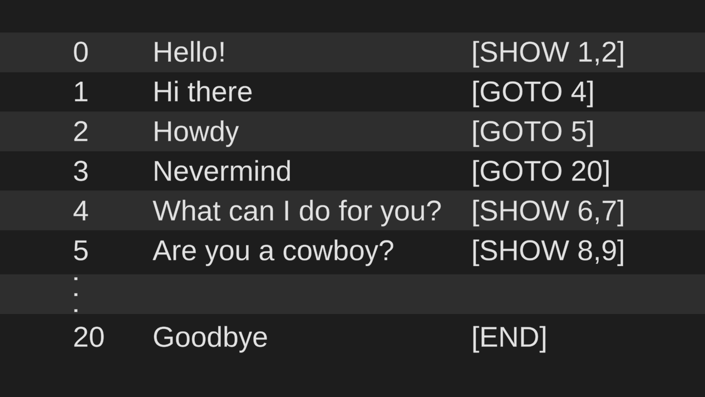
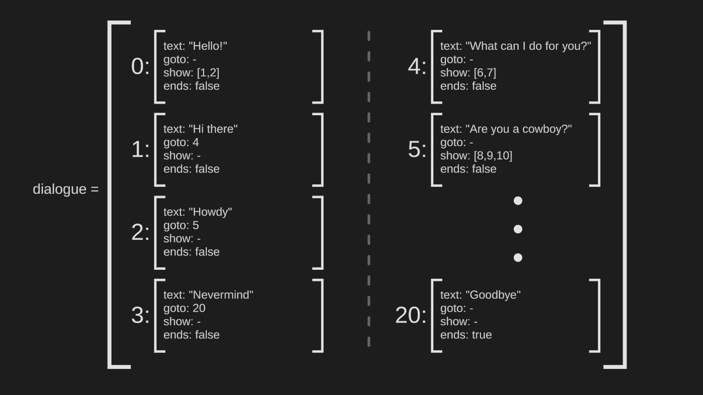
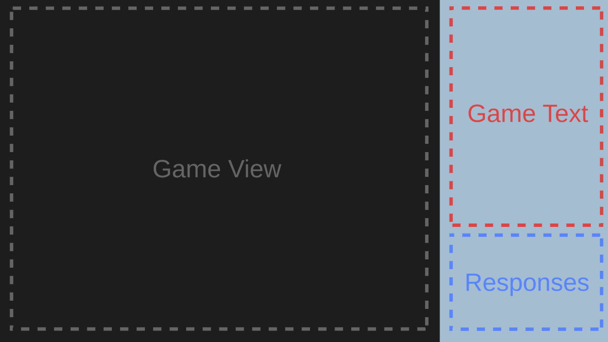
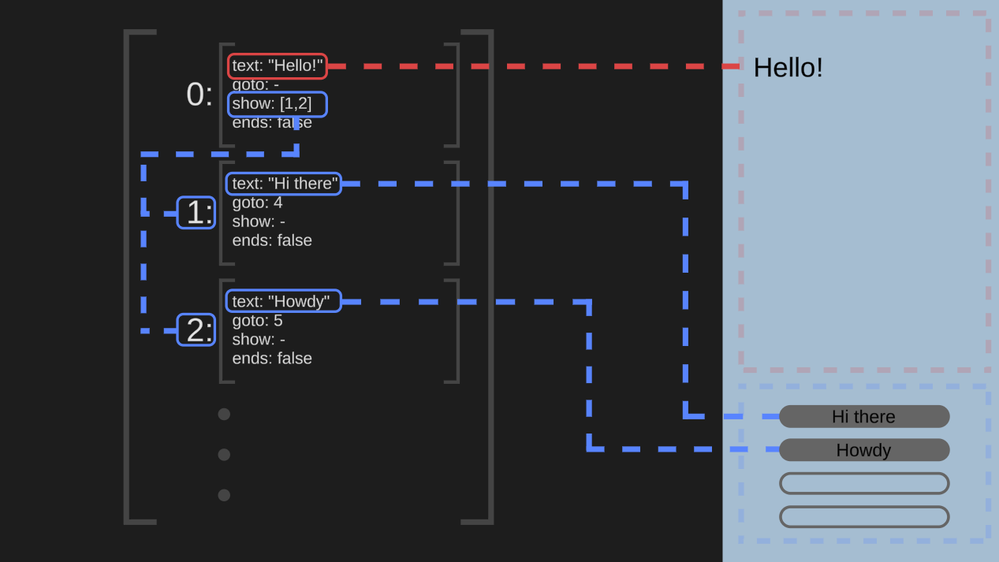

A Town Called Trouble is a text-heavy adventure game made as my final project for an Interactive Narrative course. The game was programmed in Javascript using the Twine game engine.
A major component of A Town Called Trouble was dialogue between the player and non-player characters. Despite being presented as non-linear in the game, these dialogues were inevitably written line-by-line in a text file. Each line is given an index, the dialogue to be displayed in-game, and a microdirective that will inform the game on how to interpret the line.
Because the game is programmed in Javascript, dialogue needs to be converted from a text file to a JSON object. This is handled automatically by a tool I created for A Town Called Trouble's development.
The game features a side panel in which these dialogues are presented. This panel is split into two regions: the Game Text and the Responses.
At the start of a dialogue, the 0th line's text property is loaded into the Game Text. This line will always have a SHOW microdirective referencing 1-4 other lines. The text properties of these lines are loaded into each button in the Responses, and unused buttons are hidden.
When a button is clicked, the dialogue system finds the line referenced by that line's GOTO microdirective. This line's text is then loaded into the Game Text, it's SHOW references are loaded into the Responses, and the dialogue proceeds from there. In this way, each dialogue functions as a loop between lines showing potential responses and buttons jumping to new lines in the JSON object.